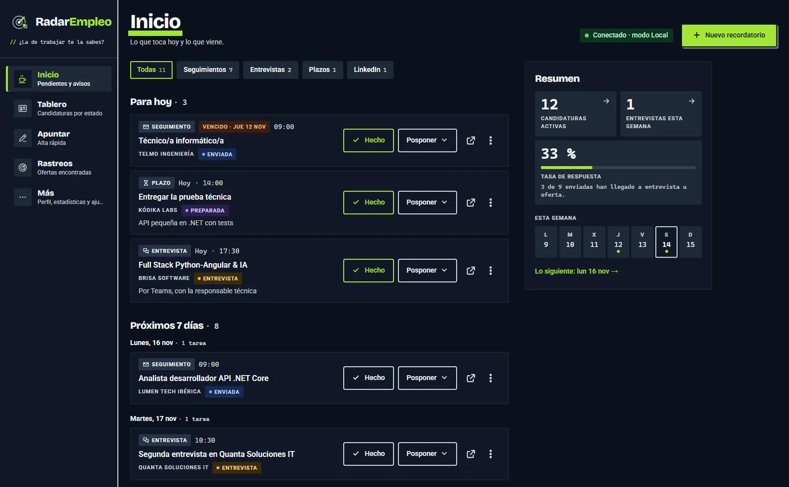
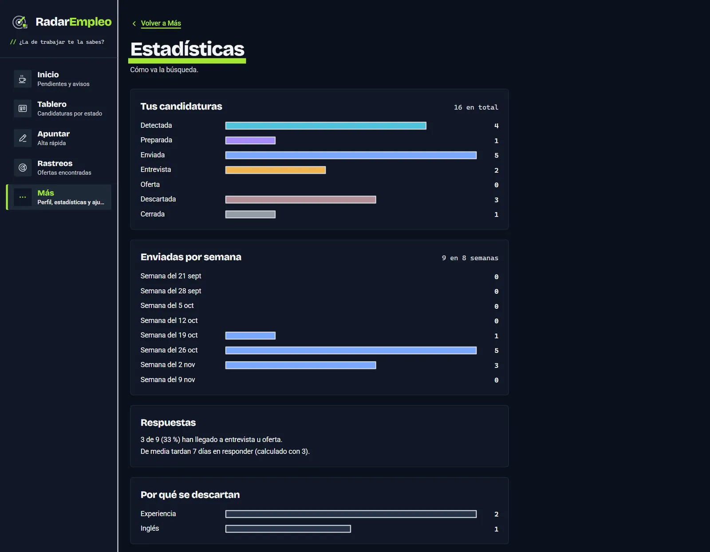
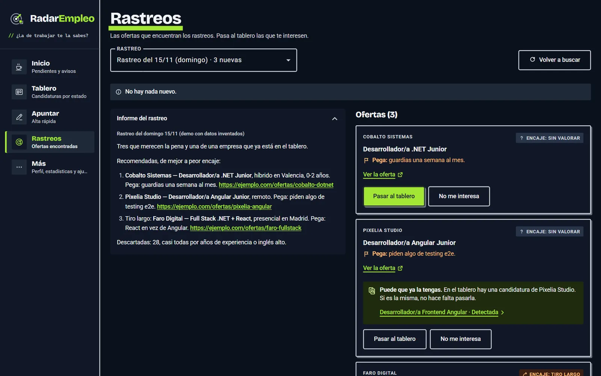
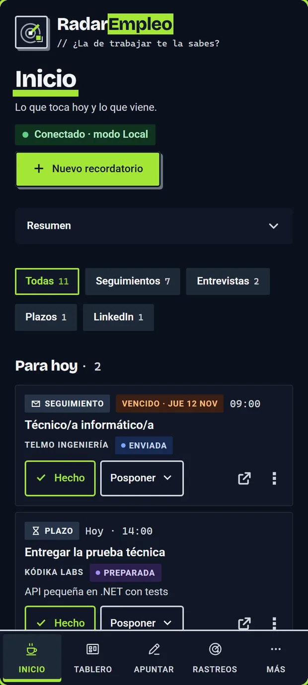
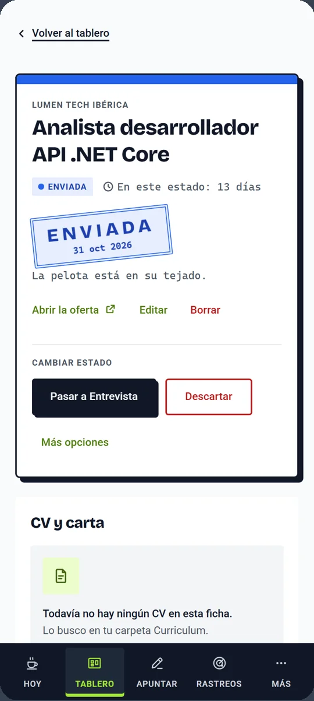
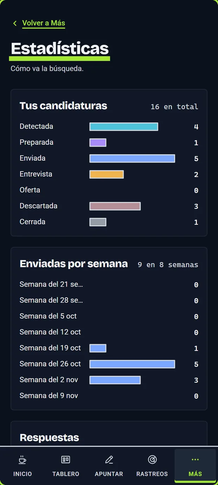

RadarEmpleo
¿La de trabajar te la sabes?
Mi búsqueda de empleo, en una app: tablero, recordatorios, estadísticas y un radar semanal de ofertas con Claude.
- ASP.NET Core 10
- Angular 22
- EF Core
- +2.000 tests
- CI en GitHub Actions (se abre en otra pestaña)
Funciona en local; aquí tienes la app real en capturas.
// 01 · Qué hace
Cinco pantallas y ni un archivo de texto
Son las que uso cada día. Las capturas son de la app de verdad, con datos de ejemplo.

01 / 05
Lo que toca hoy, lo primero
Al abrirla veo lo vencido y lo de hoy: seguimientos, entrevistas y plazos. Cada recordatorio tiene Hecho y Posponer, y si me equivoco, Deshacer o Ctrl+Z.
Debajo, los próximos siete días y las enviadas que siguen sin respuesta.
- Recordatorios
- Hecho
- Posponer
- Deshacer

02 / 05
Cada candidatura en su columna
Detectada, Preparada, Enviada, Entrevista, Oferta, Descartada y Cerrada. Las muevo arrastrando o con el menú ⋮, y las columnas sin uso se pliegan para que quepa todo.
¿Moví una sin querer? Tengo 10 minutos para deshacerlo y vuelve tal cual estaba, con sus fechas y sus seguimientos.

03 / 05
Cómo va la búsqueda, en números
Candidaturas por estado, enviadas por semana, tasa de respuesta, días de media hasta que contestan y por qué me descartan.
Cada cifra se lee también como texto, sin depender del color.
- Por estado
- Por semana
- Tasa de respuesta
- Descartes

04 / 05
Las ofertas de la semana, sin repetir
Cada semana entra un informe con las ofertas que encajan. Paso al tablero las que me interesan y el resto se queda fuera.
Si la empresa ya tiene una candidatura, avisa antes de duplicarla: Puede que ya la tengas
.
- Informe semanal
- Aviso de duplicadas
- Pasar al tablero



05 / 05
Y en el móvil, igual de cómoda
Menú abajo, zonas de toque de 48 px y textos sin jerga, en claro y en oscuro.
La ficha de cada candidatura lleva su sello, el historial de estados, las notas y, cuando la envío, el CV y la carta que mandé, que se abren dentro de la propia ficha.
- Ficha con historial
- CV enviado
- Claro y oscuro
Stack: .NET 10, ASP.NET Core, Angular 22, Signals, EF Core y Tailwind.
// 02 · Por qué la hice
Más de 30 candidaturas en un .txt
Así llevaba la búsqueda: un archivo de texto (un Markdown, para ser exactos) con la empresa, el puesto y la fecha. Pasadas las treinta ya no sabía a quién me tocaba escribir esa semana ni qué CV había mandado a cada sitio.
Así que me hice una app para ordenarlo. De paso es mi proyecto de portfolio, con el stack que piden las ofertas a las que me presento. La uso yo, así que los fallos los sufro el primero.
- +2.000 tests automáticos unos 920 tests xUnit en .NET (con unos 960 casos de Theory) y unos 880 specs en Angular
- 7 fases terminadas de la F0 a la F6; la F7 (agentes de Claude), en marcha
- 7 estados por candidatura de Detectada a Cerrada
// 03 · Cómo está hecha
Por dentro
Una API en .NET y un front en Angular, cada uno con sus tests. GitHub Actions los pasa en cada push a main.
- API
- ASP.NET Core Web API (.NET 10), ProblemDetails y OpenAPI
- Datos
- Entity Framework Core + SQLite, con migraciones
- Front
- Angular 22 (standalone, signals, zoneless), Tailwind 4 y Angular Material
- Tests
- xUnit en .NET y Vitest en Angular
- CI
- GitHub Actions: compila y pasa los tests de las dos partes
-
409
Concurrencia optimista
Si cambio la misma candidatura desde dos sitios, el segundo recibe un 409 en vez de pisar el cambio.
-
/curriculum
Acceso a archivos acotado
Solo abre CV y cartas de unas carpetas concretas. Comprueba rutas, enlaces duros y la ruta final del archivo ya abierto, para que nunca sirva otra cosa.
-
localhost
Solo en local
La API solo acepta peticiones de localhost y la base de datos vive fuera del repositorio.
-
Europe/Madrid
Fechas en hora de Madrid
Probado con el cambio de hora de marzo, incluida la hora que ese día no existe.
¿Hablamos?
Busco trabajo como desarrollador junior de .NET y Angular. El código de RadarEmpleo está en GitHub, y yo, en LinkedIn.